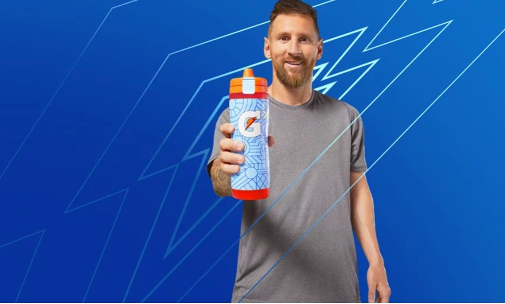
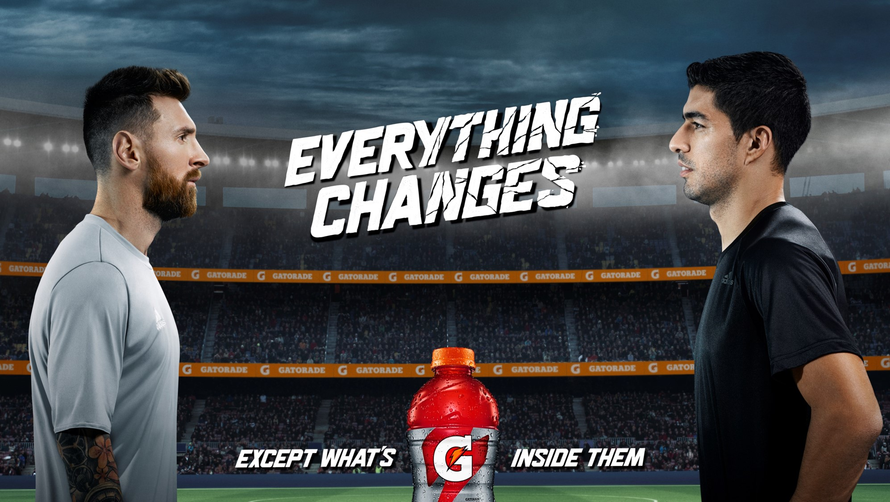

Gatorade, la bebida isotónica reconocida mundialmente, ha utilizado la imagen de Messi en varias de sus campañas deportivas, destacando su resistencia y esfuerzo en cada partido.
En la campaña "Win From Within", Messi se presenta como un ejemplo de perseverancia y trabajo duro, inspirando a los atletas de todo el mundo a seguir adelante y superarse.
Otra campaña memorable es "Everything Changes", donde Gatorade muestra la evolución de Messi como futbolista, resaltando cómo ha cambiado el juego y su impacto en el fútbol moderno.
